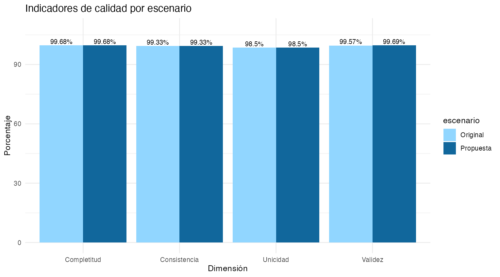
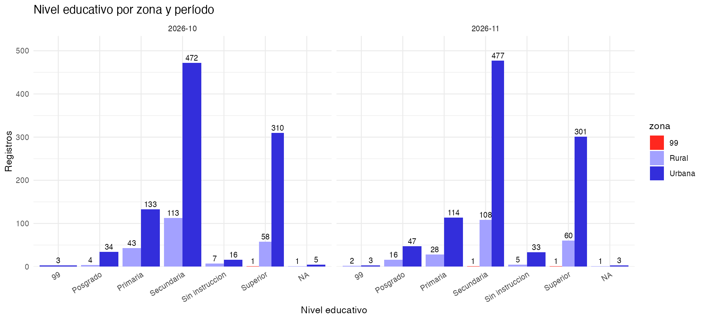
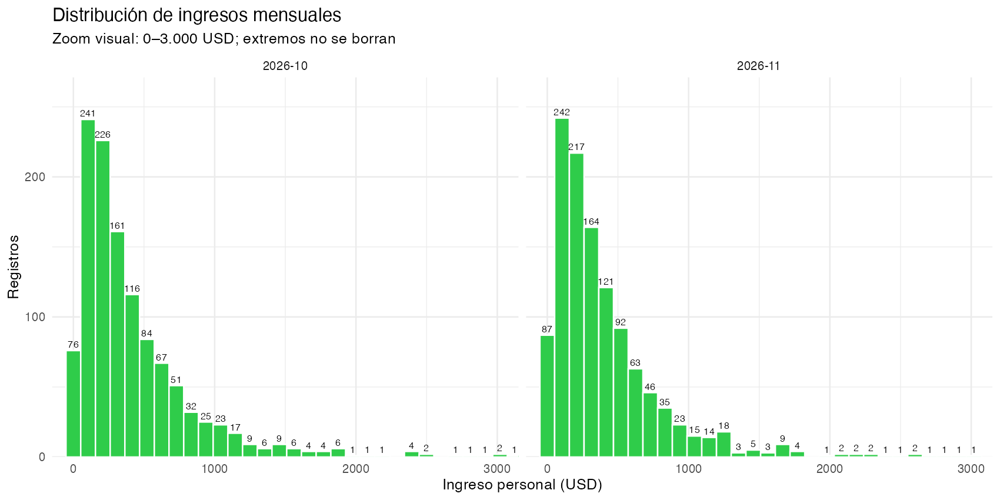
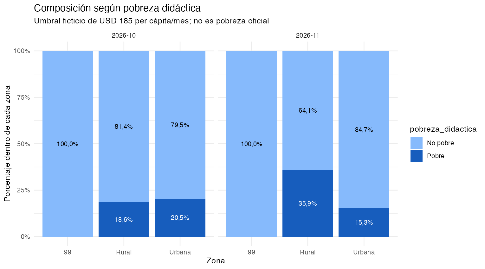
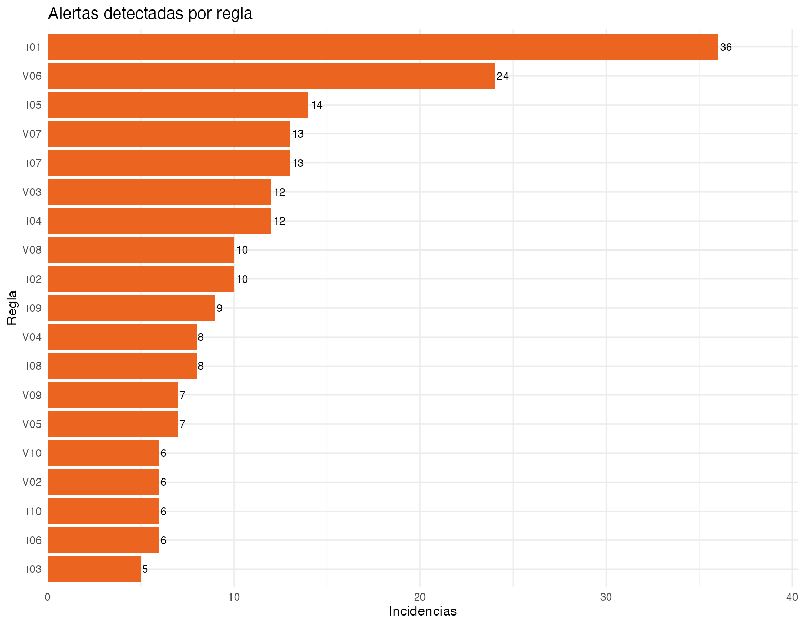

| indicador | numerador | denominador | porcentaje | escenario |
|---|---|---|---|---|
| Completitud | 14354 | 14400 | 99.68 | Original |
| Validez | 11903 | 11954 | 99.57 | Original |
| Unicidad | 2364 | 2400 | 98.50 | Original |
| Consistencia | 4762 | 4794 | 99.33 | Original |
| Completitud | 14354 | 14400 | 99.68 | Propuesta |
| Validez | 11917 | 11954 | 99.69 | Propuesta |
| Unicidad | 2364 | 2400 | 98.50 | Propuesta |
| Consistencia | 4762 | 4794 | 99.33 | Propuesta |
Informe técnico de calidad de datos
Taller final
1. Introducción
Este informe presenta resultados de un conjunto completamente sintético para practicar la evaluación de archivos de datos. No contiene cifras reales del INEC y su distribución muestral fue desbalanceada deliberadamente.
2. Objetivos
- Identificar ausencias, formatos no válidos y relaciones incoherentes.
- Mostrar indicadores con numeradores y denominadores verificables.
- Comparar los períodos octubre y noviembre de 2026 y escenarios original/propuesta.
- Documentar limitaciones antes de difundir resultados.
3. Metodología y procedencia
El conjunto contiene 2400 registros de encuestas. Los controles se construyeron en scripts R independientes y se consolidaron en un archivo RDS. La etiqueta pobreza didáctica corresponde únicamente al umbral ilustrativo de USD 185 por persona y mes. No constituye una medición oficial.
La propuesta de normalización permanece en estado: PROPUESTAS NO APROBADAS.
4. Indicadores de calidad

5. Comparación entre períodos
| indicador | numerador | denominador | porcentaje | periodo | escenario |
|---|---|---|---|---|---|
| Completitud | 7175 | 7200 | 99.65 | 2026-10 | Original |
| Validez | 5955 | 5975 | 99.67 | 2026-10 | Original |
| Unicidad | 1182 | 1200 | 98.50 | 2026-10 | Original |
| Consistencia | 2386 | 2396 | 99.58 | 2026-10 | Original |
| Completitud | 7179 | 7200 | 99.71 | 2026-11 | Original |
| Validez | 5948 | 5979 | 99.48 | 2026-11 | Original |
| Unicidad | 1182 | 1200 | 98.50 | 2026-11 | Original |
| Consistencia | 2376 | 2398 | 99.08 | 2026-11 | Original |
| Completitud | 7175 | 7200 | 99.65 | 2026-10 | Propuesta |
| Validez | 5961 | 5975 | 99.77 | 2026-10 | Propuesta |
| Unicidad | 1182 | 1200 | 98.50 | 2026-10 | Propuesta |
| Consistencia | 2386 | 2396 | 99.58 | 2026-10 | Propuesta |
| Completitud | 7179 | 7200 | 99.71 | 2026-11 | Propuesta |
| Validez | 5956 | 5979 | 99.62 | 2026-11 | Propuesta |
| Unicidad | 1182 | 1200 | 98.50 | 2026-11 | Propuesta |
| Consistencia | 2376 | 2398 | 99.08 | 2026-11 | Propuesta |
6. Educación y zonas

7. Ingresos y pobreza didáctica
| periodo_referencia | zona | registros | datos_validos | media | mediana |
|---|---|---|---|---|---|
| 2026-10 | 99 | 1 | 1 | 318.40 | 318.40 |
| 2026-10 | Rural | 226 | 221 | 452.08 | 316.28 |
| 2026-10 | Urbana | 973 | 961 | 426.77 | 279.56 |
| 2026-11 | 99 | 2 | 2 | 376.74 | 376.74 |
| 2026-11 | Rural | 220 | 216 | 342.86 | 235.93 |
| 2026-11 | Urbana | 978 | 960 | 422.72 | 303.42 |


8. Alertas y propuestas de normalización
| regla_id | severidad | incidencias |
|---|---|---|
| I01 | REVISAR | 36 |
| V06 | REVISAR | 24 |
| I05 | REVISAR | 14 |
| I07 | REVISAR | 13 |
| V07 | REVISAR | 13 |
| I04 | REVISAR | 12 |
| V03 | REVISAR | 12 |
| I02 | REVISAR | 10 |
| V08 | REVISAR | 10 |
| I09 | REVISAR | 9 |
| I08 | REVISAR | 8 |
| V04 | REVISAR | 8 |
| V05 | REVISAR | 7 |
| V09 | REVISAR | 7 |
| I06 | REVISAR | 6 |

Se registraron 28 propuestas de normalización, no autorizadas. La imputación estadística se examinó únicamente como escenario didáctico y no altera la base original.
9. Interpretación y limitaciones
La composición educativa y territorial del conjunto fue creada de forma desbalanceada; los resultados representan solo esta simulación. Las diferencias entre períodos no pueden interpretarse como tendencias poblacionales, ni los cambios entre escenario original/propuesta como mejoras oficiales sin validar su metodología y aprobación.
10. Conclusiones
El proceso de importación, perfilado, validación, integración y tabulación permitió producir resultados reproducibles. Antes de comunicar estos resultados, se deben inspeccionar las reglas, los denominadores, las incidencias y la bitácora de decisiones.
11. Actividad de interpretación: preguntas que deben responder
1. ¿Por qué un dataset con pocas ausencias todavía puede tener problemas de validez, unicidad e integridad?
R: Debido a que la ausencia de datos no es el único criterio para medir la calidad (completitud), sino que es necesario revisar la estructura de la base y de los datos. No basta con que exista efectivamente el dato, se debe analizar también si son válidos, únicos e íntegros. La calidad de un conjunto de datos no depende únicamente de su nivel de completitud; ya que, aunque existan pocos valores nulos, la información puede presentar fallos de validez, duplicidad o falta de coherencia estructural.
2. ¿Cómo distinguirá una fila repetida de dos personas con un mismo identificador?
R: Primero se identifica si en efecto tiene el mismo identificador. Una vez verificado este error, se compara la información de todas las variables para analizar si se trata de una fila repetida o no. En caso de que la observación tenga valores distintos en las demás variables, será preciso verificar si fue entrevistado en hogares diferentes o en dos momentos diferentes.
3. ¿Qué significa un id_hogar sin correspondencia, y por qué no debemos eliminarlo sin investigación?
R: Un error de correspondencia puede deberse al caso de un hogar nuevo que no estuvo inicialmente identificado. Es decir, el hogar existe pero no su id_hogar no tiene correspondencia dentro del catálogo de hogares No se debería eliminarlo sin una investigación previa; ya que, si efectivamente es un hogar nuevo recién conformado o detectado en campo, borrarlo significaría descartar datos reales de la población encuestada. Otra razón por la que no se debería eliminarlo es que podría alterar los totales poblacionales y distorsionar los indicadores estadísticos, ocasionando un sesgo en las estimaciones.
4. ¿Qué diferencia existe entre media y mediana ante un ingreso extremo alto?
R: La media, al sumar todos los valores y dividirlos para el total de elementos, aumenta de manera considerable y puede alterar el análisis de los datos. Por su parte, la mediana cambia menos, ya que es el valor central de un conjunto de datos ordenados y, por ende, no considera a los valores como tal.
5. ¿Cuál es la diferencia entre corrección propuesta y corrección aprobada?
R: La diferencia es la etapa de ejecución en la que se encuentra cada una. La propuesta es un cambio sugerido que es sujeto de análisis y validaciones. Por otro lado, la corrección aprobada ya pasó por dicha revisión y autoriza su ejecución. Debe mantener un control de versiones, responsables, justificación y fecha de los cambios realizados.
6. ¿Qué indicador mejoró entre escenario original y propuesta? ¿Es correcto afirmar que mejoró la estadística oficial?
R:
| indicador | numerador | denominador | porcentaje | escenario |
|---|---|---|---|---|
| Completitud | 14354 | 14400 | 99.68 | Original |
| Validez | 11903 | 11954 | 99.57 | Original |
| Unicidad | 2364 | 2400 | 98.50 | Original |
| Consistencia | 4762 | 4794 | 99.33 | Original |
| Completitud | 14354 | 14400 | 99.68 | Propuesta |
| Validez | 11917 | 11954 | 99.69 | Propuesta |
| Unicidad | 2364 | 2400 | 98.50 | Propuesta |
| Consistencia | 4762 | 4794 | 99.33 | Propuesta |
Se puede observar que los resultados de Completitud, Unicidad y Consistencia se mantuvieron iguales en los dos escenarios. Por su parte, el indicador de Validez muestra una leve mejoría, pasando de 99,57% a 99,69%. Por tanto, se puede afirmar que el escenario propuesto mejoró ligeramente la calidad de los datos.
7. ¿Por qué saveRDS() es necesario antes de elaborar el reporte Quarto?
R: Para separar el ambiente de donde se procesan los datos y de la generación del documento, evitando que se hagan cálculos largos. Además; que permite guardar el objeto exacto ya limpio y procesado, separando la etapa de limpieza de datos de la etapa de visualización.Cuando Quarto renderiza un documento (.qmd), inicia una sesión de R completamente nueva y limpia desde cero. Si no se guardan los datos previamente, el reporte no tendrá acceso a las variables que se creó en la memoria durante el análisis.
8. ¿Qué diferencia práctica existe entre generar un documento HTML y generar un sitio web de dos páginas?
R: La diferencia práctica es la estructura del contenido. En el documento HTML es un documento único o una página única, mientras que el sitio web de dos páginas tiene un diseño de documentos o vistas múltiples y navegación dentro del mismo, para que el usuario pueda acceder con mayor facilidad a la información que sea de su interés.
9. ¿Por qué los resultados desbalanceados no deben extrapolarse a Ecuador?
R: Debido a que son datos para fines académicos de cinco provincias ficticiamente del Ecuador, no se debería extrapolar (generalizar los hallazgos de esa muestra hacia toda la población del país) porque los resultados estarían sesgados. Para ello, se debería haber realizado el ejercicio con una muestra estadísticamente significativa y la aplicación de factores de expansión adecuados.
10. ¿Por qué la variable pobreza_didactica no equivale a pobreza monetaria oficial?
R: Por ser un ejercicio ficticio, el umbral de USD 185 no considera toda la rigurosidad metodológica necesario para calcular el dato oficial de pobreza monetaria.